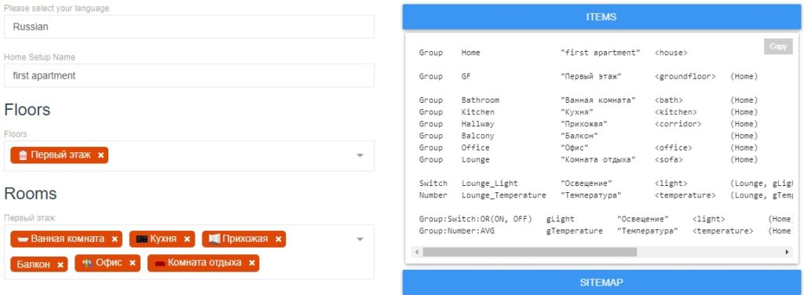

Arduino с сетевым модулем и mqtt в openHAB
Добавить комментарий
Настало время попробовать хотя бы тестово подключить Arduino с сетевым модулем на базе w5100 к openHAB по протоколу mqtt. Установку openHAB на raspberry pi мы рассматривали в этой статье, поэтому будем считать, что openHAB уже установлен и mqtt брокер mosquitto тоже, а вот что с этим делать дальше — не понятно. Будем разбираться. Для Arduino потребуется библиотека pubsubclient. Именно из неё мы возмём пример. Для подключения к брокеру mosquitto в моём случае (и это правильный путь) необходима авторизация, логин и пароль для которой мы так же указывали при установке по статье «openHAB 2 и mqtt брокер на raspberry pi«. Для прошивки Arduino буду использовать стандартную Arduino IDE. Как установить библиотеку в Arduino ide, здесь рассказывать не стану, это довольно просто и можно с лёгкостью найти не одну статью в интернете по этой теме.
Для теста нам нужны сделующие компоненты:
Arduino UNO или MEGA
Ethernet shield W5100
Светодиод с резистором
В результате будем моргать светодиодом, поключенным к пину №3 Arduino (подключен в gnd и в pin №3).
Сразу сообщу, что все необходимые файлы можно будет скачать одним архивом по ссылке в конце статьи, советую сразу это сделать и использовать их, чтобы не было проблем с синтаксисом и пробелами, так как конфигурационные файлы yaml очень чувствительны к пробелам, если их расставить не верно, то просто ничего не заработает.
Соединяем Ethernet шилд с Arduino, сетевой кабель вставляем в разъём шилда, а саму Arduino подключаем по usb к компьютеру.
Снчала проверим работу mosquitto. Версия mosquitto у меня такая
sudo service mosquitto status
● mosquitto.service - Mosquitto MQTT v3.1/v3.1.1 Broker
Loaded: loaded (/lib/systemd/system/mosquitto.service; enabled; vendor preset: enabled)
Active: active (running) since Wed 2020-04-15 07:21:49 BST; 2 weeks 5 days ago
Docs: man:mosquitto.conf(5)
man:mosquitto(8)
Main PID: 396 (mosquitto)
Tasks: 1 (limit: 2200)
Memory: 2.8M
CGroup: /system.slice/mosquitto.service
└─396 /usr/sbin/mosquitto -c /etc/mosquitto/mosquitto.conf
ВАЖНО! Пока абстрагруемся от openHAB и переключимся на Mosquitto . Вся суть заключается в том, что на брокере под названием Mosquitto создаются темы, в которые публикуется информация(можно провести аналогию с форумами в интернете), клиент брокера может читать эту информацию, подписавшись на неё и публиковать в нужную тему новые данные. Давайте проверим это на деле.
Логинимся на наш raspberry pi (у меня он имеет ip 10.36.1.18) по ssh в 2 консоли. В одной консоли пишем:
Подпишемся на тему test в брокере с ip адресом 10.36.1.18 с использованием логина pi и пароля, который мы указывали при настройке mosquitto в прошлой статье:
mosquitto_sub -h 10.36.1.18 -p 1883 -u pi -P "пароль_от_mosquitto_без_ковычек" -t test
Номер порта я не менял, стандартный порт — 1883.
А теперь в другой консоли опубликуем данные в тему test брокера следующей командой:
mosquitto_pub -h 10.36.1.18 -p 1883 -u pi -P "пароль_от_mosquitto_без_ковычек" -t test -m "test passed successfully"
После публикации на первой консоли мы увидим пришедшее сообщение «test passed successfully».
Давайте попробуем опубликовать сообщение в брокере в подтему test/t1:
mosquitto_pub -h 10.36.1.18 -p 1883 -u pi -P "пароль_от_mosquitto_без_ковычек" -t test/t1 -m "test t1 passed successfully"
На первой консоли, где мы подписались на тему, мы ничего не увидели. Почему?
Потому, что мы подписались только на конкретную тему test, без подтем. Чтобы было видно все подтемы в пределах темы test, то в первой консоли надо было подписаться не так:
mosquitto_sub -h 10.36.1.18 -p 1883 -u pi -P "пароль_от_mosquitto_без_ковычек" -t test
а вот так:
mosquitto_sub -h 10.36.1.18 -p 1883 -u pi -P "пароль_от_mosquitto_без_ковычек" -t test/#
Теперь, опубликовав во второй консоли сообщение в тему любым из способов:
mosquitto_pub -h 10.36.1.18 -p 1883 -u pi -P "пароль_от_mosquitto_без_ковычек" -t test -m "test passed successfully"
mosquitto_pub -h 10.36.1.18 -p 1883 -u pi -P "пароль_от_mosquitto_без_ковычек" -t test/t1 -m "test t1 passed successfully"
В первой консоли получим отправленные сообщения.
В этой статье я буду делать подписку на топик /r1 для управления светодиодом на arduino через OpenHAB.
На этому микро ликбез по топикам в mosquitto закончим.
Возвращаемся в OpenHAB, версию я использую следующую:
sudo systemctl status openhab2.service
● openhab2.service - openHAB 2 - empowering the smart home
Loaded: loaded (/usr/lib/systemd/system/openhab2.service; enabled; vendor preset: enabled)
Active: active (running) since Wed 2020-04-15 07:21:49 BST; 2 weeks 5 days ago
Docs: https://www.openhab.org/docs/
https://community.openhab.org
Main PID: 397 (java)
Tasks: 101 (limit: 2200)
Memory: 250.1M
CGroup: /system.slice/openhab2.service
└─397 /usr/bin/java -Dopenhab.home=/usr/share/openhab2 -Dopenhab.conf=/etc/openhab2 -Dope
Переходим на веб-интерфейс не так давно установленного openHAB сервера http://10.36.1.18:8080/start/index в раздел «home builder», чтобы создать основу нашей квартиры/дома. Я буду считать, что у нас стандартная 2 комнатная квартира и в ней только один mqtt клиент (Arduino UNO и Ethernet shield W5100).
— В разделе «Please select your language» выбираем «Ressian».
— В разделе «Home Setup Name» пишем название нашей квартиры, я вписал «first apartment»
— В разделе «Floors» указываем какая площадь у нас есть. Я указал «первый этаж».
— В разделе «Rooms» укзываем из списка имеющиеся комнаты. Можно указывать свои названия комнат, но только на английском языке. Потом в итоговых конфигурационных файлах home.items и home.sitemap надо будет исправить на ваше название комнаты.
— В разделе «Objects» выбираем имеющееся у нас умное оборудование/датчики. Везде должно быть освещение, а остальное указывайте на своё успотрение по текущему состоянию и по перспективе появления новых устройств. Я укажу свет и датчик температуры в комнате отдыха.
После выбора всех позиций эти данные можно сохранить как в текстовый файл так и во внутреннюю базу, я буду сохранять в текстовый файл. То, что мы будем сохранять в текстовые файлы видно в правой части home builder, нас интересуют items и sitemap.
�
--------------------------------------------
�
---------------------------------------------------------------------
Страничку, где мы формировали каркас квартиры не закрываем, а переходим в консоль на сервер с установленным openHAB. Конфигурационные файлы лежат в директории /etc/openhab2/, в директории /etc/openhab2/items/ создаём home.items :
sudo nano /etc/openhab2/items/home.items
Вставляем туда всё, что у нас получилось во вкладке «items» на веб интерфейсе в разделе «home builder». У меня это:
Group Home «first apartment» [«Building»]
Group GF «Первый этаж» (Home) [«GroundFloor»]
Group Bathroom «Ванная комната» (Home) [«Bathroom»]
Group Kitchen «Кухня» (Home) [«Kitchen»]
Group Hallway «Прихожая» (Home) [«Corridor»]
Group Balcony «Балкон» (Home) [«Outdoor»]
Group Office «Офис» (Home) [«Room»]
Group Lounge «Комната отдыха» (Home) [«Room»]
Switch Lounge_Light «Освещение» (Lounge, gLight) [«Lighting», «Switchable»] {channel=»»}
Number Lounge_Temperature «Температура» (Lounge, gTemperature) [«Temperature»] {channel=»»}
Group:Switch:OR(ON, OFF) gLight «Освещение» (Home) [«Lighting», «Switchable»]
Group:Number:AVG gTemperature «Температура» (Home) [«Temperature»]
Проверьте, чтобы в конце файла осталась пустая строка. Сохраняем и закрываем файл home.items
В директории /etc/openhab2/sitemaps создаём home.sitemap
sudo nano /etc/openhab2/sitemaps/home.sitemap
и так же вставляем туда всё содержимое из вкладки «sitemap» на веб интерфейсе в разделе «home builder». У меня это:
sitemap first_apartment label=»first apartment» {
Frame {
Group item=Bathroom
Group item=Kitchen
Group item=Hallway
Group item=Balcony
Group item=Office
Group item=Lounge
}
Frame {
Text label=»Освещение» icon=»light» {
Default item=Lounge_Light label=»Комната отдыха»
}
Text label=»Температура» icon=»temperature» {
Default item=Lounge_Temperature label=»Комната отдыха»
}
}
}
Тоже проверяем, чтобы была пустая строка в конце, сохраняем, закрываем.
Переходим на первую страницу http://10.36.1.18:8080/ , в раздел «BasicUI» выбираем «Home» и увидим нашу сформированную квартиру.
-------------------------------
�
Теперь надо добавить наш светодиод на 3 пине arduino. В директории /etc/openhab2/items/ на сервере создаём файл ard.items :
sudo nano /etc/openhab2/items/ard.items
вписываем туда:
Switch R1 "светодиод 3 пин" {channel="mqtt:topic:test:R1"}
Не забываем про дополнительную пустую строку в конце файла, созраняем, закрываем.
Открываем снова /etc/openhab2/sitemaps/home.sitemap и вписываем туда:
Frame label=""
{
Switch item=R1 label="светодиод 3 пин"
}
Сохраняем, закрываем.
Переходим на веб-интерфейс openHAB http://10.36.1.18:8080/start/index в раздел «Paper UI», нажимаем «Inbox» и «+», чтобы добавить Binding.
Выбираем «MQTT Binding» — «ADD MANUALLY» — «Generic MQTT Thing».
Имя указываю «Arduino MQTT Thing»
Bridge Selection выбираем наш MQTTBrokerPi
�
Синей галкой, подтверждаем введённое. У нас уже получается список из двух «Things».
�
Сохраняем.
�
--------------------------
Переходим в консоль и редактируем /etc/openhab2/items/ard.items, там меняем строку channel=»mqtt:topic:test:R1″ на ту, что сгенерировалась для канала R1 автоматически при создании «Channels»(см. предыдущее изображение). Строка должна стать похожа что что-то подобное:
Switch R1 «светодиод 3 пин» {channel=»mqtt:topic:f3de6be2:R1″}
Сохраняем, закрываем и теперь в веб-интерфейсе в синем кружке должнен появиться ещё и белый:
�
-------------------------
Посетив страницу basic ui мы увидим:
�
--------------------------
кнопка управления светодиодом расположилась отдельно внизу и никак не связана с освещением в жилой комнате. При желании исправить это можно отредактировав /etc/openhab2/sitemaps/home.sitemap и /etc/openhab2/items/home.items
Редактируем /etc/openhab2/items/home.items до следующего состояния:
Group Home «first apartment» [«Building»]
Group GF «Первый этаж» (Home) [«GroundFloor»]
Group Bathroom «Ванная комната» (Home) [«Bathroom»]
Group Kitchen «Кухня» (Home) [«Kitchen»]
Group Hallway «Прихожая» (Home) [«Corridor»]
Group Balcony «Балкон» (Home) [«Outdoor»]
Group Office «Офис» (Home) [«Room»]
Group Lounge «Комната отдыха» (Home) [«Room»]
Switch R1 «Освещение» (Lounge, gLight) [«Lighting», «Switchable»] {channel=»»}
Number Lounge_Temperature «Температура» (Lounge, gTemperature) [«Temperature»] {channel=»»}
Group:Switch:OR(ON, OFF) gLight «Освещение» (Home) [«Lighting», «Switchable»]
Group:Number:AVG gTemperature «Температура» (Home) [«Temperature»]
а файл /etc/openhab2/sitemaps/home.sitemap редактируем до следующего состояния:
sitemap first_apartment label=»first apartment» {
Frame {
Group item=Bathroom
Group item=Kitchen
Group item=Hallway
Group item=Balcony
Group item=Office
Group item=Lounge
}
Frame {
Text label=»Освещение» icon=»light» {
Switch item=R1 label=»Комната отдыха»
}
Text label=»Температура» icon=»temperature» {
Default item=Lounge_Temperature label=»Комната отдыха»
}
}
}
в итоге выключатель освещения в «комнате отдыха» не будет выбиваться из интерфейса, а включить/выключить его можно будет перейдя в раздел «Комната отдыха».
Переходим к коду arduino. Во первых Вам нужна будет библиотека PubSubClient (она есть в архиве по ссылке в конце статьи) для Arduino, а вот код скетча, который надо загрузить в Arduino можно скачать здесь и здесь.
Измениле логин, пароль и ip адреса на ваши.
Загружаем скетч в Arduino и можем переходить на http://10.36.1.18:8080/ в раздел «basic ui» — «home» — «Комната отдыха» и пощёлкать кнопкой «Освещение», при этом светодиод будет то включаться то выключаться.
БОНУС.
Чтобы не гадать, и быть уверенным до начала работы с arduino, что у Вас всё пока что работает как надо, советую использовать программу MQTT.fx. Щёлкая кнопку в интерфейсе OpenHAB можно следить публикуется ли что-то в топик брокера. Для этого сначала устанавливаем прогрпамму, потом переходим в её настройки через нажатие на шестерёнку:
�
--------------------------
Далее возле уже известной Вам шестерёнки, нажимаем кнопку «Connect». Если соединение прошло успешно, то права появится зелный круг. Переходим во вкладку «Subscribe» и подписываемся на топик /r1
�
А вот теперь можно понажимать кнопку включения света в openHAB и если в программе вижно поступающие данные, то переходить к Arduino.
Схема всего, что мы с вами сегодня сделали, конечно не очень проста, но понимая, что можно подключить arduino к openHAB и зная о невероятном количество датчиков возможных для подключения к arduino, понимаешь, что возможности этой системы очень и очень большие.
И вот та самая ссылка на архив со всеми необходимыми файлами, для реализации этого эксперимента.
----------------------
Запись опубликована 06.05.2020 в рубрике arduino, it, open source, unix, интранет, ПО, сеть, умный дом, утилиты с метками Arduino, mqtt, Raspberry Pi, Raspbian, server, ssh, web, сеть, умный дом.
Навигация по записям
← Arduino и управление светом. Версия 2.0Установка Home Assistant на raspberry pi →